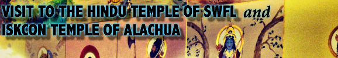

| "For the moon's radiant glow shines like no other, forming an everlasting glow of purity and guidance against the vast darkness of the sky." Choosing this celestial body over any other symbolic representation is a key factor in describing who I am and what I'm about. Just like the moon changes form during the month, I too have gone through transformations during my lifetime. Each phase has given me skills, experiences, and challenges; all of which have molded the individual I am today. As the full moon radiates all her glory at the end of each cycle, she illuminates the landscape below. This website is an artistic piece of my composed work and experiences, with the purpose and intention of illuminating interest and intrigue. Recently, I visited the Hindu Temple of SWFL in Fort Myers, Florida for the celebration of a Maa Durga Puja. The Goddess Durga is affectionally known as the Mother Goddess in Hinduism, particulary within Shivaism. Having visited the temple in the past, I have seen its growth as a building, and its development as a religious and cultural center for the Hindu community. Feel free to experience this celebration and temple history through my visual journey by clicking on the picture below.  /|\ Namaste and Blessed Be )O( Carlos Alberto Soria |